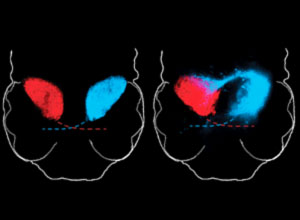

News Archives : 2008 : Engineering Binocularity in the Zebrafish Brain
by Florian Engert and Pavan Ramdya
September 9, 2008
(L to R) Florian Engert and Pavan Ramdya  (left panel) Monocular retinal innervation in a normal larval zebrafish. The right optic tectal lobe receives input solely from the contralateral (red) retina. (right panel) Following rewiring, the right tectal lobe receives projections from both the contralateral (red) and ipsilateral (cyan) eyes. |
|
A major outstanding question in neurobiology is how the brain can evolve to perform new computations. For instance, how did binocular brain areas, with access to information from both eyes, emerge from monocular ancestoral homologues primarily connected to one eye? Did these more complex networks arise from the exploitation of preexisting developmental rules or were fundamentally new ones required?
We addressed this question by engineering a binocular projection to the optic tectum, a prominent visual brain area in the larval zebrafish that is normally connected to one eye. While typically each half of the optic tectum receives input from the opposite-sided eye, we could surgically induce the formation of a connection with the same-sided eye as well (see figure). We then recorded the output of hundreds of neurons within optic tecta receiving these convergent retinal inputs while presenting visual stimuli to each eye.
Remarkably, neurons in these newly binocular zebrafish responded strongly to visual stimulation of the newly incorporated eye, demonstrating an innate capacity for this otherwise monocular neural circuit to integrate a second retinal input. Since many binocular neurons were direction selective (responding robustly to visual stimuli moving in one and not the opposite direction), we compared their responses to moving stimuli presented to each eye. Surprisingly, they were direction selective for the same direction of motion in each eye, a coherence in visual processing that is a hallmark of binocular neural circuits in stereoscopic animals such as primates and cats. Mechanistically, we determined that this coherence is a consequence of the alignment of each projection from both eyes to the tectum. Neurons within the tectum process these projections similarly, resulting in matching direction selective output following local neural processing.
In all, our results demonstrate that the developmental rules which govern the emergence of some binocular functional properties are already present within monocular neural circuits. Combined with the brain’s remarkable flexibility for integrating new sensory inputs, this suggests that, during evolution, binocular visual processing may have arisen soon after information from each eye converged onto unitary neural circuits within the brain.
Read more in Nature Neuroscience